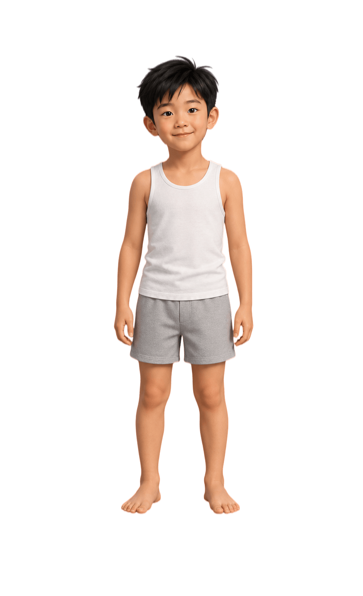

体重长得有点快（接近肥胖）
查看详情乐乐的体重已经到了"接近肥胖"的范围，这并不等于"长得壮"。儿童期的肥胖很容易一路带到青春期和成年，以后血脂、血糖出问题的风险更高。好在现在还是临界阶段，最有效的办法不是节食，而是先稳住体重不再涨——随着身高继续长，体重指数会自然回到正常。这件事越早做越省力。
乐乐的整体身体底子很好，本次体检未发现需要紧急处理的问题。需要家长留意的是体重长得有点快、视力下降（疑似近视）、牙齿有龋坏、血脂有一项接近偏高，这四样都还处在早期阶段，具体分析与建议见下方各模块；通过调整饮食、增加运动、改善用眼和口腔习惯，多数可以改善。
乐乐的体重已经到了"接近肥胖"的范围，这并不等于"长得壮"。儿童期的肥胖很容易一路带到青春期和成年，以后血脂、血糖出问题的风险更高。好在现在还是临界阶段，最有效的办法不是节食，而是先稳住体重不再涨——随着身高继续长，体重指数会自然回到正常。这件事越早做越省力。
8 岁前后是近视发展最快、也是干预效果最好的窗口期。验光已经提示双眼存在近视，如果现在不明确真实度数、不及时干预，度数很可能一年比一年加深，甚至走向高度近视。所以这件事要"趁早办"，不要等孩子看不清黑板了再处理。
刚萌出的"六龄齿"是要陪孩子用一辈子的牙齿，现在已经出现龋坏。蛀洞不会自己长好，拖得越久坏得越深，一旦伤到牙神经，补牙就变成了又贵又遭罪的根管治疗。好在早期龋处理起来很简单，孩子几乎没感觉，早处理就是最省钱的方案。
孩子出现甘油三酯偏高，是典型的"吃出来的信号"——这个年纪出现，多半不是疾病或遗传，而是含糖饮料、油炸零食和运动太少叠加的结果。好在它比血脂异常更容易改善，调整饮食习惯后几个月内就能回到正常，这也是帮孩子养成一辈子好习惯的好契机。

8 岁儿童正处在快速生长期，判断体重不能只看数字，要和同龄男孩比（百分位）。乐乐身高位于第 70 百分位（中上水平），而 BMI 已到第 95 百分位（接近肥胖）——体重跑得比个子快。近一年家长也反馈饭量变大、体重长得快。照这个速度，一年后很可能进入肥胖范围；现在开始控制，体重百分位也会随之回落。

针对：体重偏重、甘油三酯接近偏高
不用一下全部戒掉，先从最容易改的开始：
减少糖和油炸食物的摄入，能直接减少甘油三酯的来源，也能让体重增长放慢、回到同龄正常范围。

针对：体重偏重、视力下降风险
规律运动能帮助体重百分位回落；每天 1 小时户外光照是目前公认最有效的近视预防手段之一，一举两得。
针对：龋齿、牙龈充血
恒磨牙要使用一生、窝沟深最容易蛀；窝沟封闭加上规范刷牙，能显著降低再次蛀牙的风险。
先把该看的专科看完，再给身体 3 个月的调整时间。
尽快（1 个月内）
约 3 个月后
日常记录：每月在家测一次身高、体重并记下来；尽量 21:30 前入睡，保证 9–10 小时睡眠。
本报告解读仅供参考，不能替代专业医师的诊断与治疗建议。如有不适请及时就医。